Code for Digital Image Processing Morphological Operations
Table of Contents
These are the code snippets used in Morphological Operations
part of Digital Image Processing.
Introduction
Preamble
The following is a custom package written to handle plotting and other functions required by the lecture.
import ChalcedonPy as cp # custom-pakcage for lecture materials and publications SAVE_PATH = "Morphological-Operations" # sets the default save path style="web" # sets the default rcParams stylce sheet
import cv2 as cv import matplotlib.pyplot as plt import matplotlib.colors # all related to colours from matplotlib.image import imread import numpy as np
# Class focused on plotting functions with a sense of visual aesthetics class Plotting: # Set the colour parameter for plots to fit beamer metropolis theme cp.plot_settings(style = style, size = None) #plt.rcParams["figure.facecolor"] = "(0.98, 0.98, 0.98)" #plt.rcParams.update({'axes.facecolor': '(0.98, 0.98, 0.98)'}) #matplotlib.colors.ColorConverter.colors['bg1'] = (0.98, 0.98, 0.98) @staticmethod def image_subplot_style(row, column, image_array, publish=None, show=None, rgb=None, title=None, cmap_array=None, set_cmap=False): """Presents a set of images in a grid of subplots. :param figsize: Figure size for your subplot. :param title: Add title to your plot. Treated as array. :param cmap_array: colormap array, if none entered it is treated as None. :param row: Number of rows in an image. :param column: Number of columns in an image. :param image_array: Write here the images in an array you want in the plot in the order you want it to show. :param publish: Write the name of the file you want to save it as (.eps, 200 dpi). :param show: Just activates plt.show(). :param rgb: Sets print colour to true. """ # noinspection PyTypeChecker fig_plot, axes_plot = plt.subplots(row, column, sharex=True, sharey=True) for ind, ax_loop in enumerate(axes_plot.flatten()): Plotting.remove_borders(ax_loop) # remove unnecessary borders ax_loop.tick_params(left=False, right=False, labelleft=False, labelbottom=False, bottom=False) ax_loop.imshow(image_array[ind][:][:]) # print image for subplot if rgb: # convert image bgr to rgb if set_cmap is True: ax_loop.imshow(Plotting.bgr2rgb(image_array[ind][:][:]), cmap=cmap_array[ind]) else: ax_loop.imshow(Plotting.bgr2rgb(image_array[ind][:][:])) if title is None: # Determine where to put the title on the image if ind < column: ax_loop.set_title("(" + str(chr(ord('a') + ind)) + ")", fontsize=12) else: ax_loop.set_xlabel("(" + str(chr(ord('a') + ind)) + ")", fontsize=12) else: # Determine where to put the title on the image if ind < column: ax_loop.set_title(title[ind], fontsize=12) else: ax_loop.set_xlabel(title[ind], fontsize=12) Plotting.printer(show, publish) @staticmethod def plot_subplot_style(fig_subplot, axes_subplot): """ Some standard aesthetics for the matplotlib function :param fig_subplot: figure for the subplot. :param axes_subplot: axes for the subplot. """ axes_subplot.spines['top'].set_visible(False) axes_subplot.spines['right'].set_visible(False) axes_subplot.xaxis.set_tick_params(width=2) axes_subplot.yaxis.set_tick_params(width=2) plt.rcParams['axes.linewidth'] = 2 fig_subplot.tight_layout() @staticmethod def bgr2rgb(image_in_bgr): """Converts an image from BGR space to RGB. :param image_in_bgr: image in BGR format. :return: image in RGB format. """ return cv.cvtColor(image_in_bgr, cv.COLOR_BGR2RGB) @classmethod def compare_images(cls, original, altered): """Creates two individual windows to showcase the filters effect :param original: Original unaltered image :param altered: Output altered image """ # A static function to showcase both the original and the altered image cv.imshow('Original Image', original) cv.imshow("Output Image", altered) # Wait and close all windows cv.waitKey(0) cv.destroyAllWindows() @classmethod def printer(cls, show=None, publish=None): # To print the plot in a nice .eps file in 300 dpi format. if publish: plt.savefig(publish + ".png", format='png', dpi=300, bbox_inches='tight') # To lazy to write plt.show() if show: plt.show() @classmethod def color_loop(cls): prop_cycle = plt.rcParams['axes.prop_cycle'] colors = prop_cycle.by_key()['color'] return colors @classmethod def remove_borders(cls, axes_rm_borders): axes_rm_borders.spines['top'].set_visible(False) axes_rm_borders.spines['right'].set_visible(False) axes_rm_borders.spines['bottom'].set_visible(False) axes_rm_borders.spines['left'].set_visible(False) axes_rm_borders.tick_params(which='both', size=0, labelsize=0) axes_rm_borders.grid(which='major', color='#DDDDDD', linewidth=0.05) axes_rm_borders.grid(which='minor', color='#DDDDDD', linewidth=0.05)
Erosion
Erosion is used to remove pixels from the boundary of the input image shrinking the object.
To make publishing and generating images easier a custom wrapper function is defined with the following defition and parameters.
DEFINITION: Apply the erosion morphology process to an image
| PARAMETER | FUNCTION |
|---|---|
| iterations | number of times erosion is applied |
| show | Presents the comparative image to the user. |
| publish | Prints the image with the name being the entered value (300 dpi, .png) |
| rgb | Converts images from bgr to rgb. |
| return | Returns original image and the filtered image. |
def morph_erosion(image, kernel, iterations=1, show=None, publish=None, rgb=None): erosion = cv.erode(cv.imread(image), kernel, iterations=iterations) Plotting.image_subplot_style(1, 2, image_array=[cv.imread(image), erosion], show=show, publish=publish, rgb=rgb) return cv.imread(image), erosion
Plotting Comparisons
The following are successive effects of increasing the kernel size.
The kernel size is made up from 1's using a numpy array.
The following comparison is between the original and the original with erosion applied with a kernel size of 5.
kernel = np.ones(5) image = "Fruit.jpg" o, er = morph_erosion(image, kernel = kernel, publish ="images/Morphological-Operations/Erosion-k-5", show=False, rgb=True)
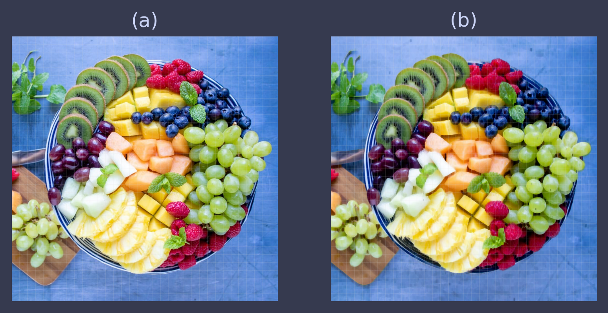
As can be seen there is a slight different between the two images as the one on the right seems to have lost its shapness.
The following comparison is between the original and the original with erosion applied with a kernel size of 9.
kernel = np.ones(9) image = "Fruit.jpg" o, er = morph_erosion(image, kernel, publish ="images/Morphological-Operations/Erosion-k-9", show=False, rgb=True)

The image on the right seems to be darker on the edges. The following comparison is between the original and the original with erosion applied with a kernel size of 13.
kernel = np.ones(13) image = "Fruit.jpg" o, er = morph_erosion(image, kernel, publish ="images/Morphological-Operations/Erosion-k-13", show=False, rgb=True)
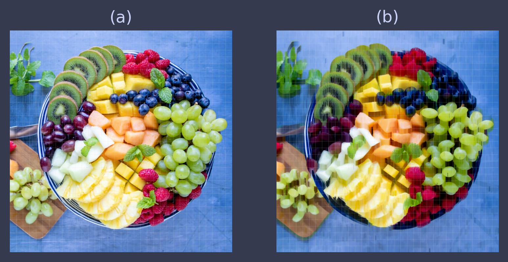
The darkness has increased with the ediges becoming ever more shifted.
The following comparison is between the original and the original with erosion applied with a kernel size of 17.
kernel = np.ones(17) image = "Fruit.jpg" o, er = morph_erosion(image, kernel, publish ="images/Morphological-Operations/Erosion-k-17", show=False, rgb=True)
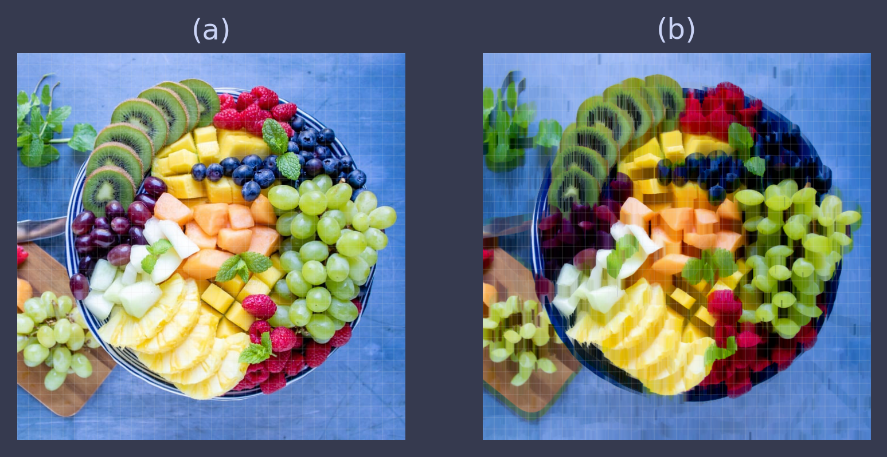
The following comparison is between the original and the original with erosion applied with a kernel size of 21.
kernel = np.ones(21) image = "Fruit.jpg" o, er = morph_erosion(image, kernel, publish ="images/Morphological-Operations/Erosion-k-21", show=False, rgb=True)
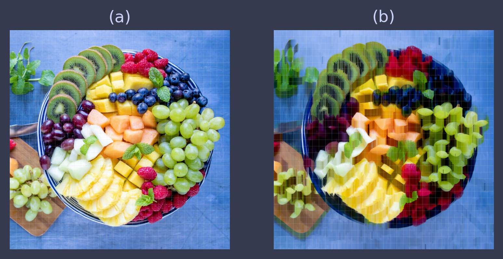
Compared to the original the image has completely lost its sharpness and it looks as if someone slightly smeared it going up.
Here, lets compare erosion with increasing kernel sizes in one big image, along with the original, for a better comparison.
image = "Fruit.jpg" o, me_5 = morph_erosion(image,kernel = np.ones(5), rgb=True) o, me_9 = morph_erosion(image,kernel = np.ones(9), rgb=True) o, me_13 = morph_erosion(image,kernel = np.ones(13), rgb=True) o, me_17 = morph_erosion(image,kernel = np.ones(17), rgb=True) o, me_21 = morph_erosion(image, kernel = np.ones(21), rgb=True) image_array=[o, me_5, me_9, me_13, me_17, me_21] Plotting.image_subplot_style(2, 3, image_array=image_array, show=False, publish="images/Morphological-Operations/Erosion-comparison", rgb=True)

In the above image, (a) is the original input (b) is eroded with kernel size 5, (c) is 9, (d) is 13 (e) is 17, and (f) is 21.
Dilation
Dilation is one of the most common morphological operation along with Erosion where it is used to add pixels to the boundary of the input image making the object more visible and fill small voids in the image.
Dilation operator takes two inputs, one is the image and the other one is the structuring element (i.e., kernel).
The structuring element determines the effect of dilation on the input image.
def morph_dilation(image, kernel, iterations=1, show=None, publish=None, rgb=None): dilation = cv.dilate(cv.imread(image), kernel, iterations=iterations) Plotting.image_subplot_style(1, 2, image_array=[cv.imread(image), dilation], show=show, publish=publish, rgb=rgb) return cv.imread(image), dilation
kernel = np.ones(5) image = "Fruit.jpg" o, di = morph_dilation(image, kernel, publish ="images/Morphological-Operations/dilation-k-5", show=False, rgb=True)
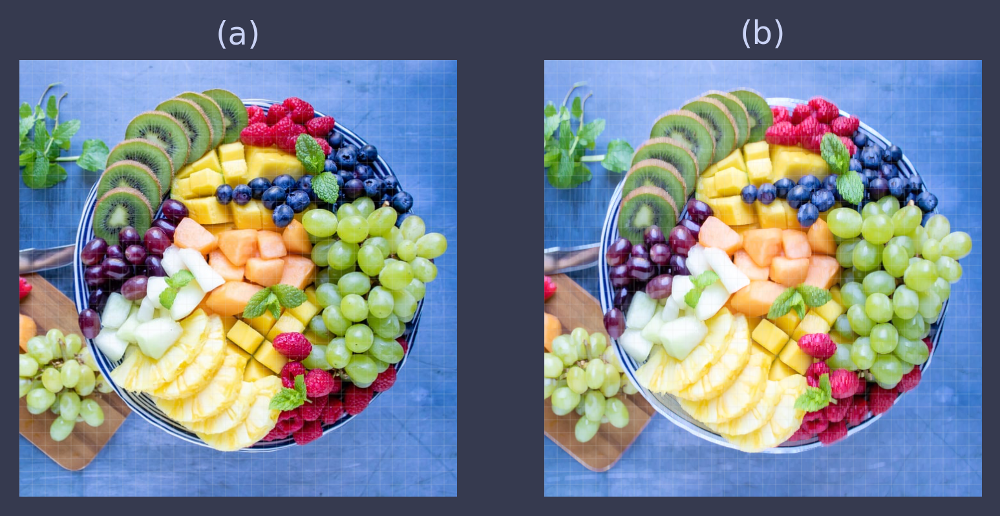
kernel = np.ones(9) image = "Fruit.jpg" o, di = morph_dilation(image, kernel, publish ="images/Morphological-Operations/dilation-k-9", show=False, rgb=True)
kernel = np.ones(13) image = "Fruit.jpg" o, di = morph_dilation(image, kernel, publish ="images/Morphological-Operations/dilation-k-13", show=False, rgb=True)
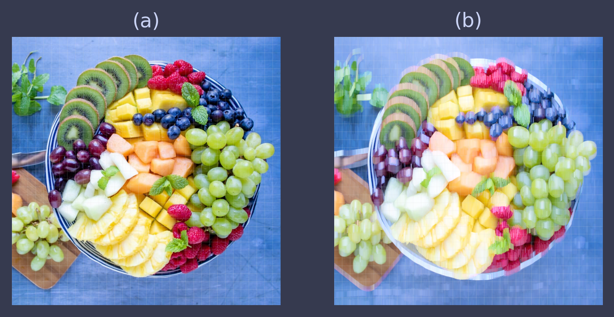
kernel = np.ones(17) image = "Fruit.jpg" o, di = morph_dilation(image, kernel, publish ="images/Morphological-Operations/dilation-k-17", show=False, rgb=True)
kernel = np.ones(21) image = "Fruit.jpg" o, di = morph_dilation(image, kernel, publish ="images/Morphological-Operations/dilation-k-21", show=False, rgb=True)
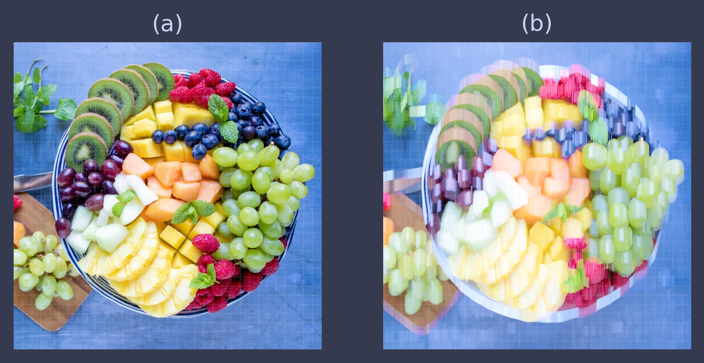
image = "Fruit.jpg" o, me_5 = morph_dilation(image,kernel = np.ones(5), rgb=True) o, me_9 = morph_dilation(image,kernel = np.ones(9), rgb=True) o, me_13 = morph_dilation(image,kernel = np.ones(13), rgb=True) o, me_17 = morph_dilation(image,kernel = np.ones(17), rgb=True) o, me_21 = morph_dilation(image, kernel = np.ones(21), rgb=True) image_array=[o, me_5, me_9, me_13, me_17, me_21] Plotting.image_subplot_style(2, 3, image_array=image_array, show=False, publish="images/Morphological-Operations/dilation-comparison", rgb=True)
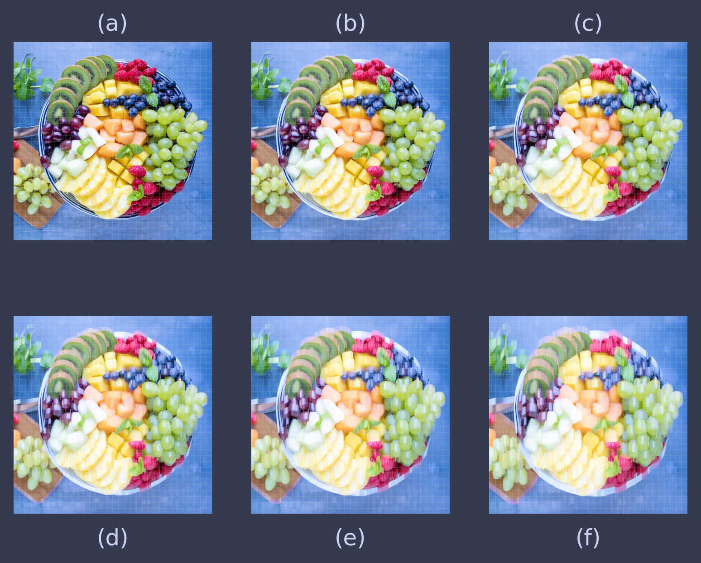
Opening
def morph_opening(image, kernel, show=None, publish=None, rgb=None): opening = cv.morphologyEx(cv.imread(image), cv.MORPH_OPEN, kernel) Plotting.image_subplot_style(1, 2, image_array=[cv.imread(image), opening], show=False, publish=publish, rgb=rgb) return cv.imread(image), opening
kernel = np.ones(5) image = "Fruit.jpg" o, di = morph_opening(image, kernel, publish ="images/Morphological-Operations/opening-k-5", show=False, rgb=True)

kernel = np.ones(9) image = "Fruit.jpg" o, di = morph_opening(image, kernel, publish ="images/Morphological-Operations/opening-k-9", show=False, rgb=True)
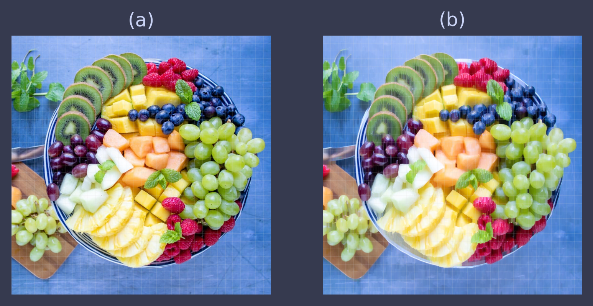
kernel = np.ones(13) image = "Fruit.jpg" o, di = morph_opening(image, kernel, publish ="images/Morphological-Operations/opening-k-13", show=False, rgb=True)
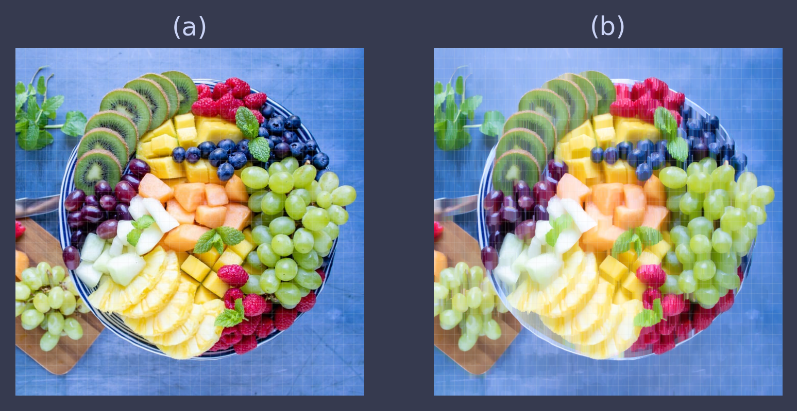
kernel = np.ones(17) image = "Fruit.jpg" o, di = morph_opening(image, kernel, publish ="images/Morphological-Operations/opening-k-17", show=False, rgb=True)
kernel = np.ones(21) image = "Fruit.jpg" o, di = morph_opening(image, kernel, publish ="images/Morphological-Operations/opening-k-21", show=False, rgb=True)
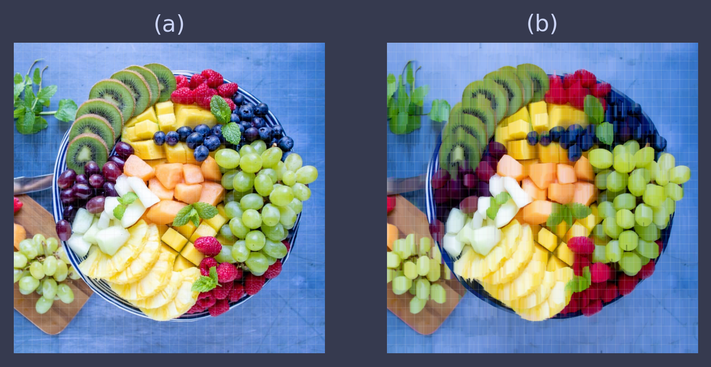
image = "Fruit.jpg" o, me_5 = morph_opening(image,kernel = np.ones(5), rgb=True) o, me_9 = morph_opening(image,kernel = np.ones(9), rgb=True) o, me_13 = morph_opening(image,kernel = np.ones(13), rgb=True) o, me_17 = morph_opening(image,kernel = np.ones(17), rgb=True) o, me_21 = morph_opening(image, kernel = np.ones(21), rgb=True) image_array=[o, me_5, me_9, me_13, me_17, me_21] Plotting.image_subplot_style(2, 3, image_array=image_array, show=False, publish="images/Morphological-Operations/opening-comparison", rgb=True)
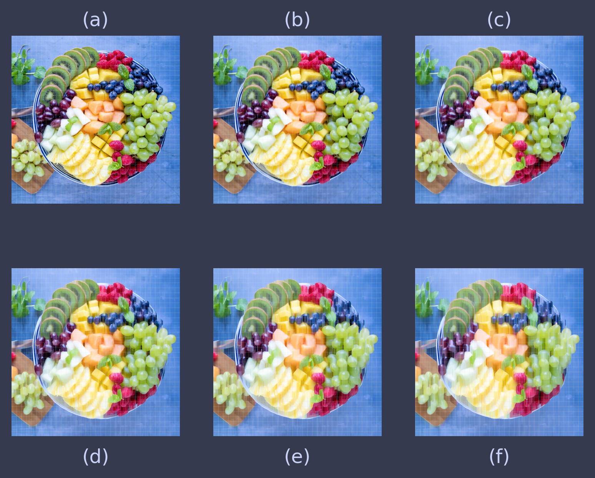
Closing
the closing of a set (binary image) A by a structuring element B is the erosion of the dilation of that set,
\begin{equation*} A\bullet B=(A\oplus B)\ominus B \end{equation*}where \(\oplus\) and $\ominus denote the dilation and erosion, respectively.
In image processing, closing is, together with opening, the basic workhorse of morphological noise removal. Opening removes small objects, while closing removes small holes.
def morph_closing(image, kernel, show=None, publish=None, rgb=None): closing = cv.morphologyEx(cv.imread(image), cv.MORPH_CLOSE, kernel) Plotting.image_subplot_style(1, 2, image_array=[cv.imread(image), closing], show=show, publish=publish, rgb=rgb) return cv.imread(image), closing
kernel = np.ones(5) image = "Fruit.jpg" o, di = morph_closing(image, kernel, publish ="images/Morphological-Operations/opening-k-5", show=False, rgb=True)
kernel = np.ones(9) image = "Fruit.jpg" o, di = morph_closing(image, kernel, publish ="images/Morphological-Operations/opening-k-9", show=False, rgb=True)
kernel = np.ones(13) image = "Fruit.jpg" o, di = morph_closing(image, kernel, publish ="images/Morphological-Operations/opening-k-13", show=False, rgb=True)
kernel = np.ones(17) image = "Fruit.jpg" o, di = morph_closing(image, kernel, publish ="images/Morphological-Operations/opening-k-17", show=False, rgb=True)
kernel = np.ones(21) image = "Fruit.jpg" o, di = morph_closing(image, kernel, publish ="images/Morphological-Operations/opening-k-21", show=False, rgb=True)
image = "Fruit.jpg" o, me_5 = morph_closing(image,kernel = np.ones(5), rgb=True) o, me_9 = morph_closing(image,kernel = np.ones(9), rgb=True) o, me_13 = morph_closing(image,kernel = np.ones(13), rgb=True) o, me_17 = morph_closing(image,kernel = np.ones(17), rgb=True) o, me_21 = morph_closing(image, kernel = np.ones(21), rgb=True) image_array=[o, me_5, me_9, me_13, me_17, me_21] Plotting.image_subplot_style(2, 3, image_array=image_array, show=False, publish="images/Morphological-Operations/closing-comparison", rgb=True)
Gradient
It is the difference between the dilation and the erosion of a given image. It is an image where each pixel value (typically non-negative) indicates the contrast intensity in the close neighborhood of that pixel. It is useful for edge detection and segmentation applications.
def morph_gradient(image, kernel, show=None, publish=None, rgb=None): gradient = cv.morphologyEx(cv.imread(image), cv.MORPH_GRADIENT, kernel) Plotting.image_subplot_style(1, 2, image_array=[cv.imread(image), gradient], show=show, publish=publish, rgb=rgb) return cv.imread(image), gradient
kernel = np.ones(5) image = "Fruit.jpg" o, di = morph_gradient(image, kernel, publish ="images/Morphological-Operations/gradient-k-5", show=False, rgb=True)
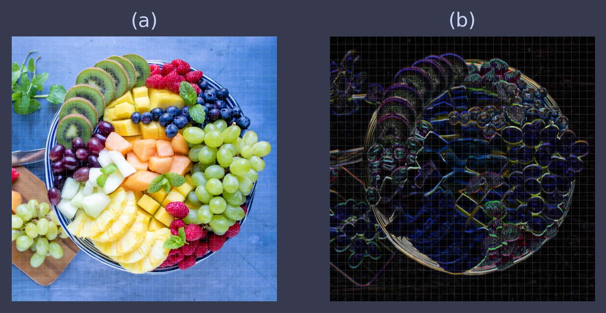
kernel = np.ones(9) image = "Fruit.jpg" o, di = morph_gradient(image, kernel, publish ="images/Morphological-Operations/gradient-k-9", show=False, rgb=True)
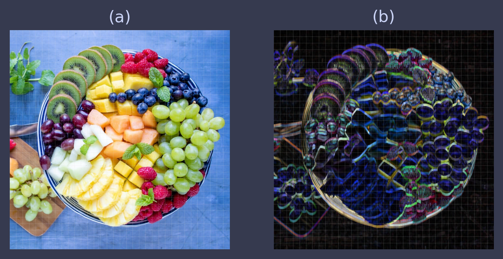
kernel = np.ones(13) image = "Fruit.jpg" o, di = morph_gradient(image, kernel, publish ="images/Morphological-Operations/gradient-k-13", show=False, rgb=True)
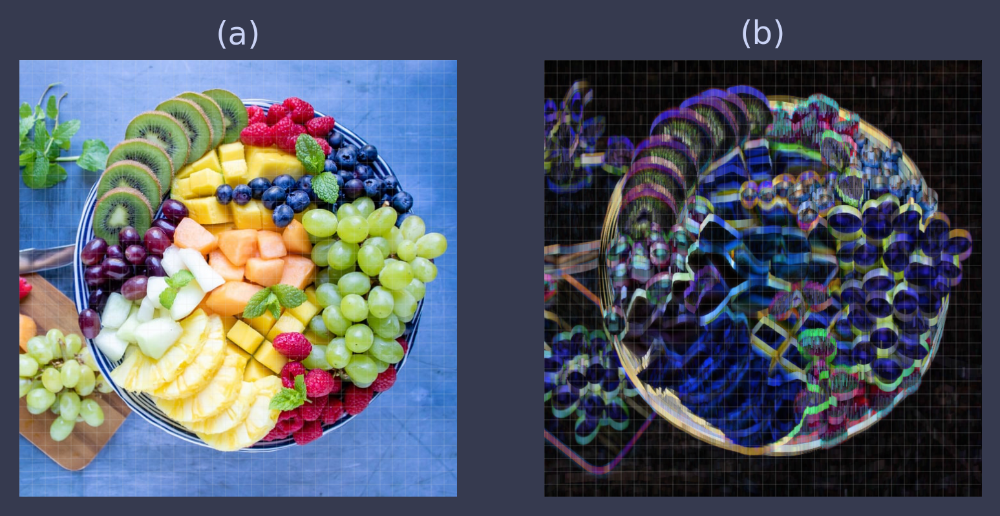
kernel = np.ones(17) image = "Fruit.jpg" o, di = morph_gradient(image, kernel, publish ="images/Morphological-Operations/gradient-k-17", show=False, rgb=True)
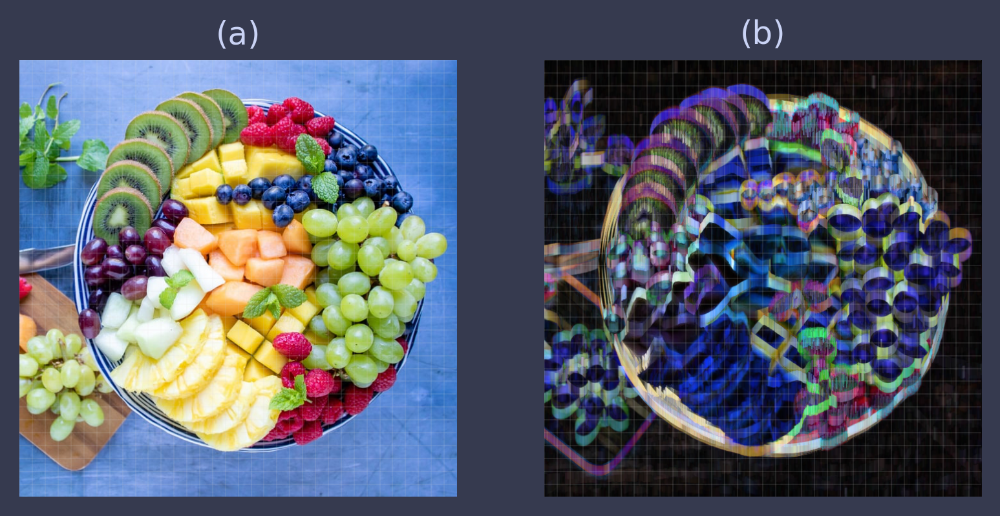
kernel = np.ones(21) image = "Fruit.jpg" o, di = morph_gradient(image, kernel, publish ="images/Morphological-Operations/gradient-k-21", show=False, rgb=True)
image = "Fruit.jpg" o, me_5 = morph_gradient(image,kernel = np.ones(5), rgb=True) o, me_9 = morph_gradient(image,kernel = np.ones(9), rgb=True) o, me_13 = morph_gradient(image,kernel = np.ones(13), rgb=True) o, me_17 = morph_gradient(image,kernel = np.ones(17), rgb=True) o, me_21 = morph_gradient(image, kernel = np.ones(21), rgb=True) image_array=[o, me_5, me_9, me_13, me_17, me_21] Plotting.image_subplot_style(2, 3, image_array=image_array, show=False, publish="images/Morphological-Operations/gradient-comparison", rgb=True)
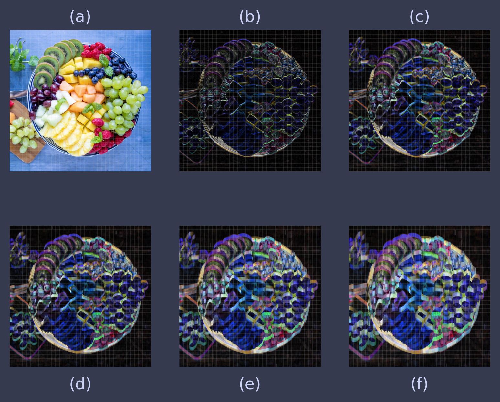
Tophat
Top-hat transform is an operation that extracts small elements and details from given images. There exist two types of top-hat transform:
- top-hat transform is defined as the difference between the input image and its opening by some structuring element,
- black top-hat transform is defined dually as the difference between the closing and the input image.
Top-hat transforms are used for various image processing tasks, such as feature extraction, background equalization, image enhancement, and others.
White Top-hat
Used to enhance bright objects of interest in a dark background.
def morph_tophat(image, kernel, show=None, publish=None, rgb=None): hat = cv.morphologyEx(cv.imread(image), cv.MORPH_TOPHAT, kernel) Plotting.image_subplot_style(1, 2, image_array=[cv.imread(image), hat], show=show, publish=publish, rgb=rgb) return cv.imread(image), hat
kernel = np.ones(5) image = "Fruit.jpg" o, di = morph_tophat(image, kernel, publish ="images/Morphological-Operations/tophat-k-5", show=False, rgb=True)
kernel = np.ones(9) image = "Fruit.jpg" o, di = morph_tophat(image, kernel, publish ="images/Morphological-Operations/tophat-k-9", show=False, rgb=True)
kernel = np.ones(13) image = "Fruit.jpg" o, di = morph_tophat(image, kernel, publish ="images/Morphological-Operations/tophat-k-13", show=False, rgb=True)

kernel = np.ones(17) image = "Fruit.jpg" o, di = morph_tophat(image, kernel, publish ="images/Morphological-Operations/tophat-k-17", show=False, rgb=True)
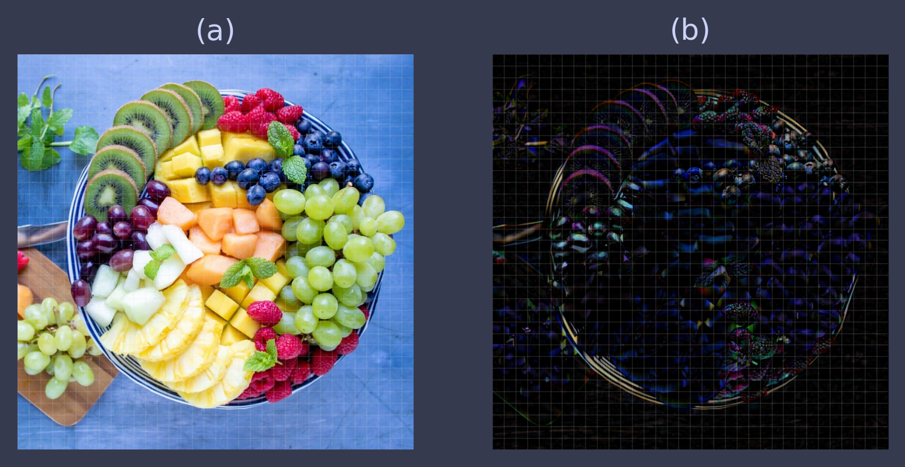
kernel = np.ones(21) image = "Fruit.jpg" o, di = morph_tophat(image, kernel, publish ="images/Morphological-Operations/tophat-k-21", show=False, rgb=True)
image = "Fruit.jpg" o, me_5 = morph_tophat(image,kernel = np.ones(5), rgb=True) o, me_9 = morph_tophat(image,kernel = np.ones(9), rgb=True) o, me_13 = morph_tophat(image,kernel = np.ones(13), rgb=True) o, me_17 = morph_tophat(image,kernel = np.ones(17), rgb=True) o, me_21 = morph_tophat(image, kernel = np.ones(21), rgb=True) image_array=[o, me_5, me_9, me_13, me_17, me_21] Plotting.image_subplot_style(2, 3, image_array=image_array, show=False, publish="images/Morphological-Operations/tophat-comparison", rgb=True)
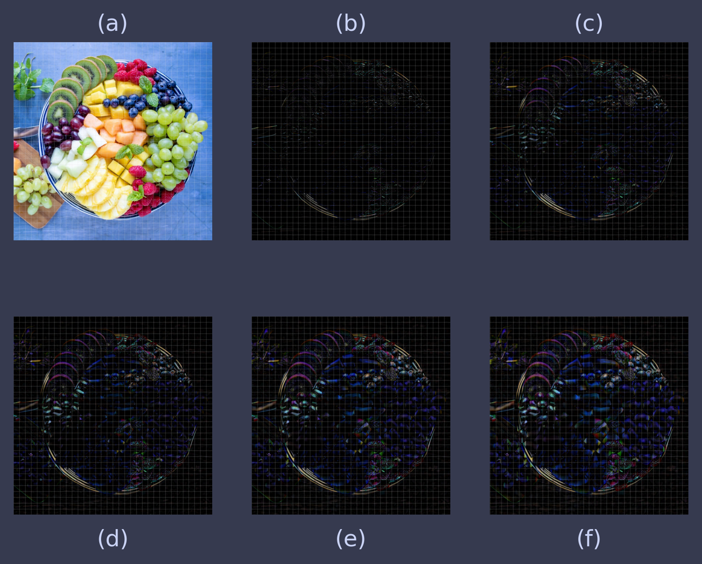
Blackhat
The black-hat operation is used to do the opposite, enhance dark objects of interest in a bright background.
def morph_blackhat(self, show=None, publish=None, rgb=None): black_hat = cv.morphologyEx(cv.imread(image), cv.MORPH_BLACKHAT, self.kernel) if show: Plotting.image_subplot_style(1, 2, image_array=[cv.imread(image), black_hat], show=show, publish=publish, rgb=rgb) return cv.imread(image), black_hat